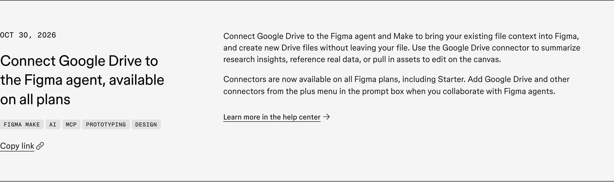
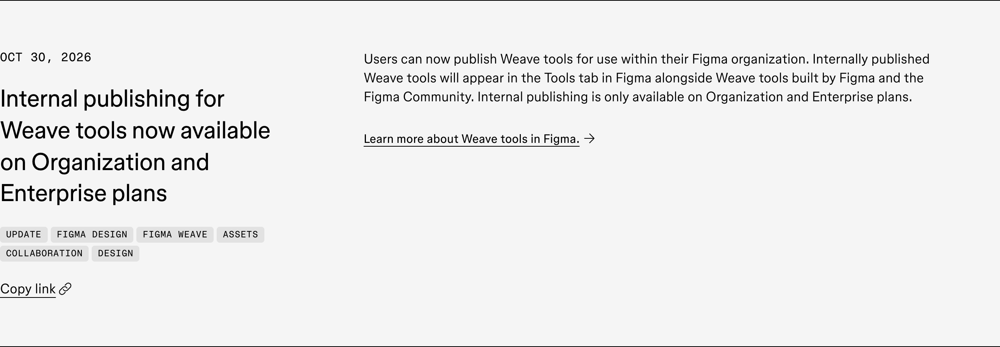
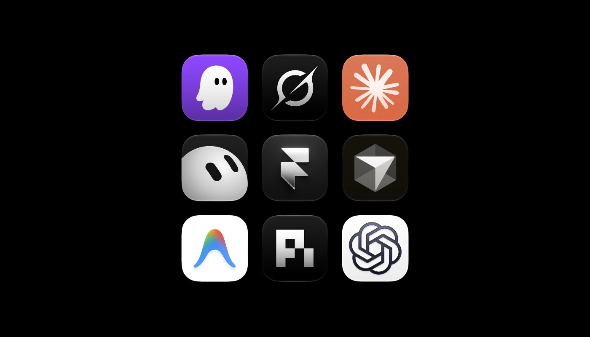
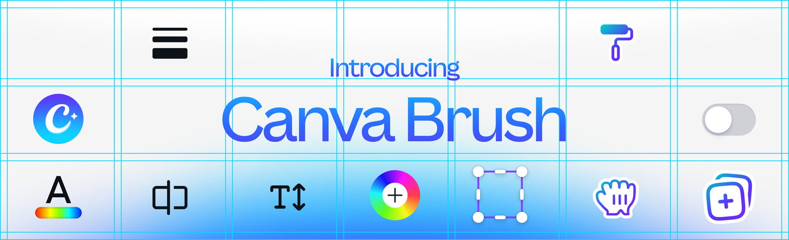
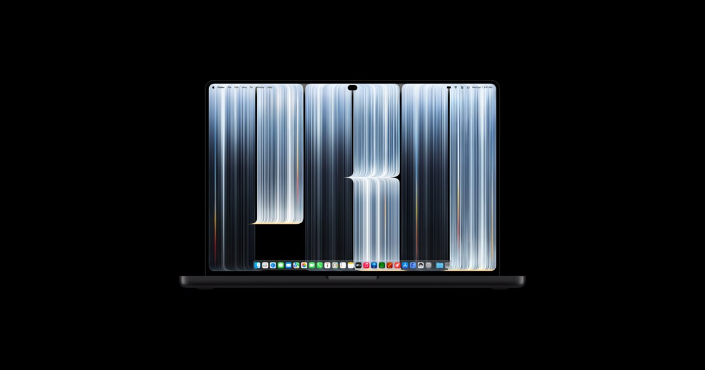

今天不缺新品，缺的是边界。Figma 把 Drive 里的研究和内部 Weave 工具拉进 agent，Framer 公开了一套从 Slack 报错到分支审阅的做法，Apple 又把手指正式带回 Mac。放在一起看，生成已经不是最难的部分；上下文从哪来、谁能发布、改完怎么验，才是团队接下来真正要补的东西。
Canva Brush 给了速度和成本数字，但还没实测，先不替它欢呼。OpenAI 那条统一 robots.txt 信号也只是未来几个月会支持，不是今天就能抄进配置。周末消息不算多，反而适合把“已发布”和“准备发布”分清楚。

Google Drive connector 已开放给所有 Figma 套餐，包括 Starter。它不只负责把图片拖进画布：agent 和 Figma Make 可以总结研究、引用真实数据、取用现有素材，也能在不离开文件的情况下创建新的 Drive 文件。
这一下把 Drive 从“交付物仓库”变成了生成时的上下文。问题也随之变了：agent 读到的是哪一版研究、继承了谁的权限、最终引用的数据能不能追溯。先接一份只读研究文档跑通，比一上来把整个团队盘交给它靠谱。

Organization 和 Enterprise 现在可以把 Weave 工具只发布给组织内部，成员会在 Figma 的 Tools 标签页里看到它们。Starter 和 Professional 不在这次范围里。
内部小工具一旦能被全组织发现，就不能再按“谁写的谁维护”糊弄过去。至少得有 owner、版本、数据边界和回滚方式，不然 Tools 标签页很快会变成另一个没人敢删的插件坟场。这个更新不花哨，但它把 AI 工具真正推到了内部产品管理这一步。

Framer 自己公开了几条 MCP 流程：同事在 Slack 报一处文案问题，agent 会先找出受影响的页面，在分支里改完，再交给人审；站点迁移交给专用 skills；内容团队还会拿 Ahrefs、Search Console 和 CMS 数据一起改客户案例与 SEO 文案。
标题写的是 MCP，真正有用的是那条工作纪律：先定位、进分支、再审阅，不直接碰线上。 一次小文案能牵出三个页面，正好说明网站维护不是“把字换掉”这么简单。案例来自 Framer 自己，不算第三方证明；但作为 agent 如何进生产流程的范本，它比十段自动生成 landing page 的演示都诚实。

Canva 把 Brush 定义成能理解设计语义的视觉语言模型，目标不是吐出一张扁平图片，而是在原设计里改局部、保持元素可编辑。官方称新版本比上一代 agent 快 69%、成本低 46%，目前由 Canva Pro 支持；Brand Kit、附件理解和重图片任务还在后续计划里。
这些数字都来自 Canva，暂时只能当发布方口径。它真正值得试的是“只改我圈出来的东西，别碰其他地方”——这比再生成一张海报难得多，也更接近日常返工。可以拿一份 20 页 deck 做压力测试：改同一个数字、替一组产品图、保持网格和字号不漂，跑完再谈能不能进团队流程。

Apple 新增 Touch on Mac 设计与开发指引：扩大难点中的点击目标，使用系统 gesture recognizer，保留指针和键盘路径，并为没有 hover 的状态准备替代入口。原生控件会随触控环境扩展，自己画的控件则得自己负责。
这不等于把 Mac App 全部吹成巨型 iPad。真正要清账的是那些只在 hover 才出现、只用右键才找得到、命中区刚好卡在鼠标精度上的旧交互。同一块界面最好让手指、触控板、鼠标和键盘轮流走一遍；四种输入都能完成任务，尺寸才算调对。
OpenAI 表示会和其他参与方一起遵守一条共享的 robots.txt 信号，让网站运营者表达是否愿意把内容用于 AI 训练。原有 crawler 控制仍然有效，新信号的具体支持要等未来几个月。
所以现在别急着猜一条指令写进生产环境；它还不是已经落地的标准。更现实的准备，是把“哪些内容允许搜索抓取、哪些允许训练、谁有权改变”放进站点发布清单。过去这事只归 SEO，现在它已经是内容授权和品牌治理的一部分。
视频：Vimeo 原片https://vimeo.com/1220163076｜来源：Stash 文章https://www.stashmedia.tv/brickland-blurs-the-line-for-polestars-prime-package/
Stash 周末没有更新，我回头补了这条 10 月 12 日的 Polestar Prime Package。Brickland 从“白纸上画下一条线”出发，把那根线继续推成车身、流体和色块；车不是被摆在背景前展示，而是在同一块表面里不断显形、拉伸、扫过、消散。
从制作说明看，团队用了大量 Houdini，同时先用静帧序列做 art direction，再把被选中的形态推进成定制 setup。这个顺序很值得抄：先挑对轮廓和节奏，再做程序化系统，别让技术测试替你决定审美。
产品片也可以只选一个“视觉动词”。Polestar 这里是流动和显形；做数字产品，可以把它换成折叠、聚拢或解锁，再用 flow map、噪声和遮罩位移做一条 hero 转场，同时准备 reduced-motion 的静态替代。一个动词贯穿到底，通常比十种特效轮番上阵更像品牌。
Stash 首页与 API 截至 11 月 1 日仍停在 10 月 30 日，周末没有新文章。下面四条只登记状态，不把旧内容换一套形容词重发。
1220163076。核验说明：Figma、Framer、Canva、Apple、OpenAI 与 Stash 官方页面于 2026-11-01 回读。正文嵌图原始宽度为 1200–2640px，并逐张目视检查。Polestar 的 Vimeo player URL 预检返回 401，飞书按规则使用 1920px Stash 制作视觉降级，同时保留 Stash 与 Vimeo 原片链接。